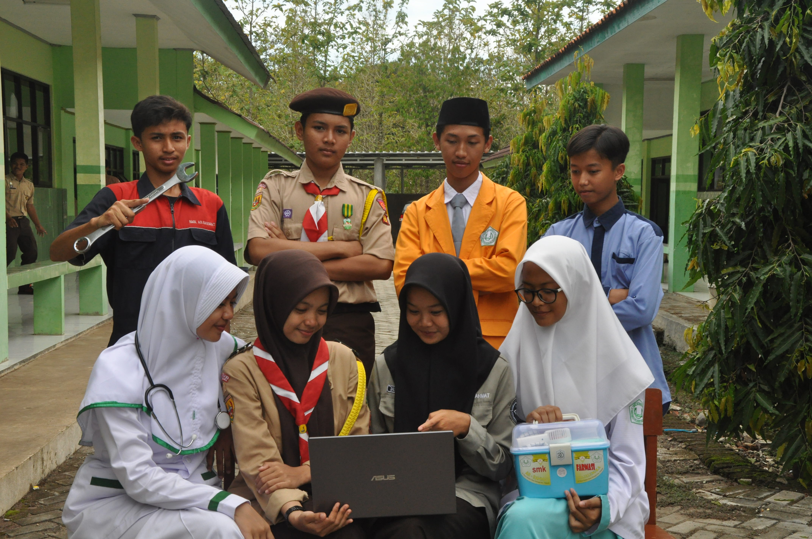

Galeri
SMK AR-RAHMAT



SMK Ar Rahmat di Weragati, Kecamatan Palasah, Kabupaten Majalengka, menawarkan lingkungan pembelajaran nyaman dengan fasilitas lengkap, seperti ruang kelas modern dan laboratorium canggih. Sekolah ini berkomitmen mencetak lulusan berkualitas yang siap bersaing di dunia kerja atau melanjutkan pendidikan.
Terdapat lima jurusan unggulan: Rekayasa Perangkat Lunak (RPL), Teknik Komputer dan Jaringan (TKJ), Teknik Kendaraan Ringan Otomotif (TKRO), Farmasi, dan Asisten Keperawatan. Dengan kurikulum berbasis praktik dan tenaga pendidik profesional, SMK Ar Rahmat menjadi pilihan tepat untuk membangun masa depan.
Jurusan yang mempelajari pengembangan, desain, dan pemeliharaan aplikasi atau perangkat lunak berbasis teknologi untuk memenuhi kebutuhan industri digital dan teknologi informasi.
Jurusan yang mendalami pengelolaan perangkat keras, instalasi jaringan, serta pemeliharaan sistem komputer untuk mendukung konektivitas dan keamanan data.
Jurusan yang berfokus pada perawatan, perbaikan, dan diagnosa mesin kendaraan ringan seperti mobil, mencakup sistem kelistrikan, mekanik, dan teknologi otomotif terkini.
Jurusan yang mempelajari pembuatan, pengelolaan, dan distribusi obat, serta pemahaman tentang penggunaan obat secara tepat dan aman dalam dunia kesehatan.
Jurusan yang mempersiapkan siswa untuk mendukung perawatan kesehatan pasien melalui teknik keperawatan dasar, administrasi medis, serta pelayanan kesehatan masyarakat.